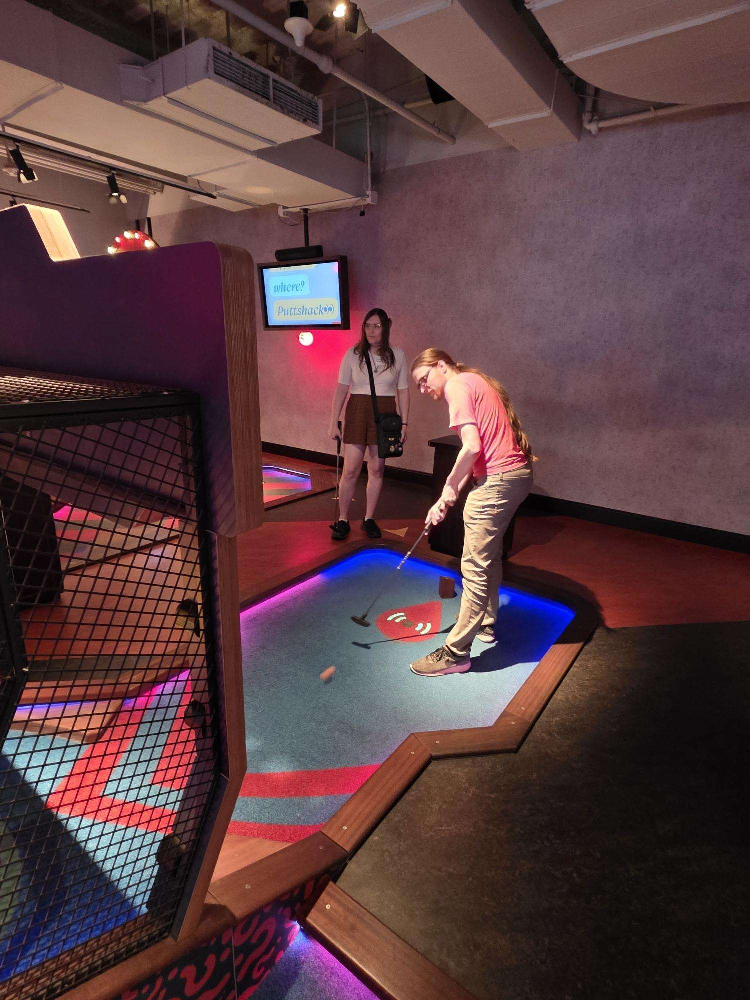
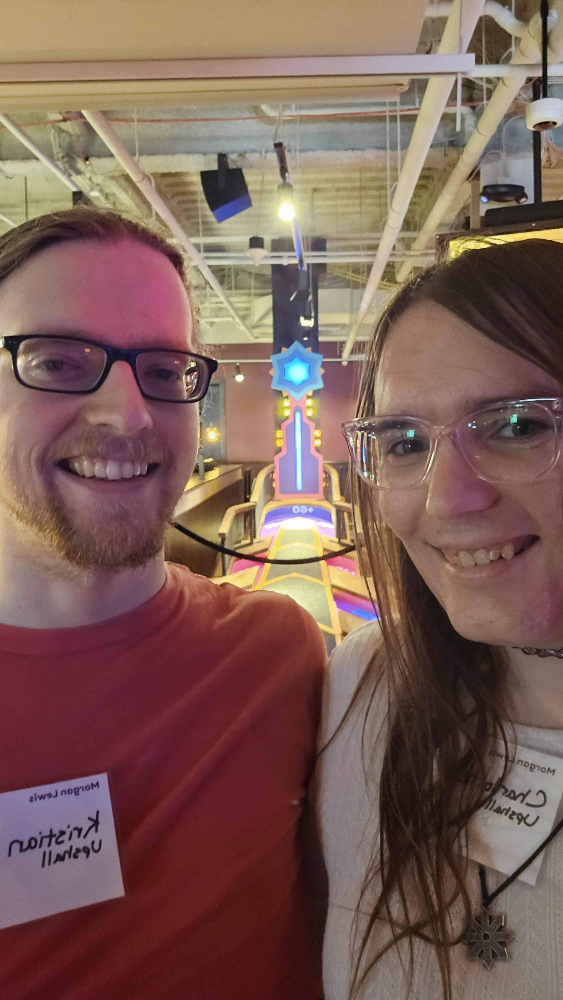
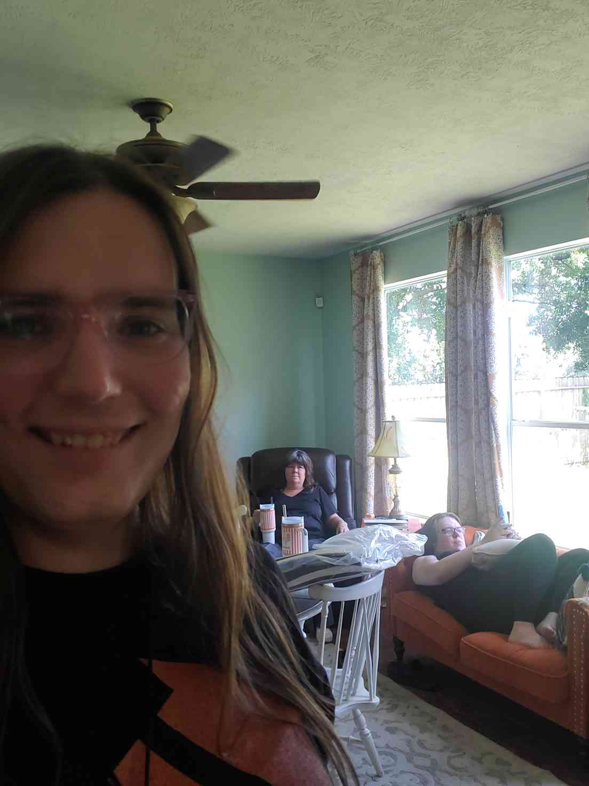
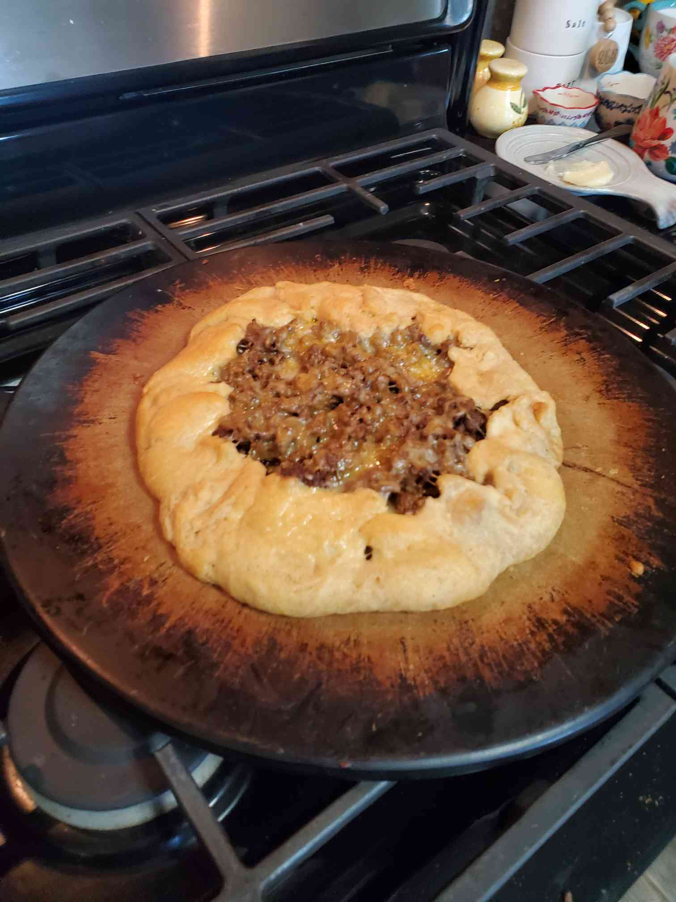

I realise I forgot to write an entry about my experience mini-golfing with Kristian as part of a work event.
(I technically wrote this the 30th, but the event was on the 18th.)
Idk I don't really have much to say other than it was fun and I'd like to at least have a record of it to look back on.
I guess if you're looking for spicy deets I did get a little drunk from the free drinks and we, yknow... had some fun in the car before going home. ₍^•˕•^₎⟆


While we're here I'll also throw the pictures from when me and Rose helped watch Adam and made a taco star with her mom.

